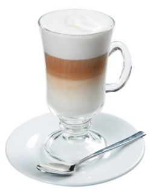

Кофе - латте
Кофе латте – напиток родом из Италии, однако не прижившийся там. В начале его готовили для детей, чтобы те наравне со взрослыми могли наслаждаться кофе без вреда для своего маленького организма, несколько позже вкус этого напитка оценили по достоинству и взрослые. Сегодня в кофейнях кофе латте бьет все рекорды по популярности.
Ингридиенты:

Молоко жирностью 2% – 150 мл.
Кофе-эспрессо – 50 мл.
Сахар – по вкусу
Молотая корица – по вкусу
Приготовление
Подогрейте молоко до 70 градусов.
Ни в коем случае нельзя допустить, чтобы молоко закипело, поскольку взбить его будет крайне сложно.
В подогретое молоко по желанию можно добавить сахар.
Заварите эспрессо (или любой имеющийся у вас дома кофе).
Молоко необходимо взбить, для этого можете использовать миксером или блендером и наполнить им чашку или айриш-бокал, но не до конца.
А теперь самое сложное – добавление кофе в молоко.
Возьмите ложку, опустите ее почти до самой пенки в чашке и тонкой струйкой начинайте вливать кофе в центр ложки. Запомните: кофе должен быть немного горячее молока, в противном случае слои будут смешиваться.
Сверху следует выложить оставшуюся молочную пенку. При желании посыпьте корицей.